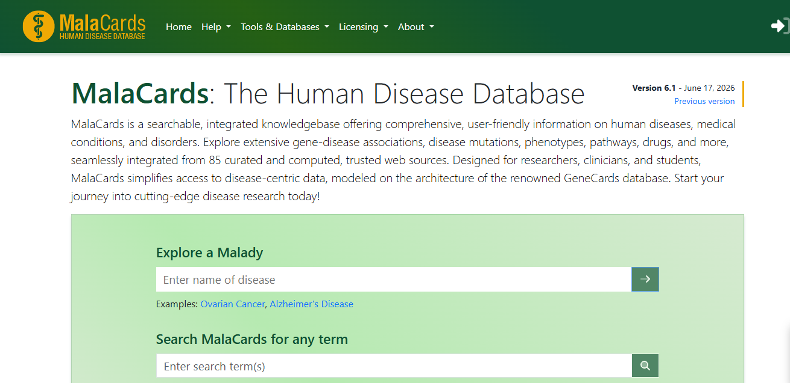
MalaCards
MalaCards es una base de datos integrada de enfermedades humanas que compila y unifica información proveniente de más de 75 fuentes especializadas. Ofrece perfiles completos que vinculan cada enfermedad con genes, síntomas, fármacos, vías biológicas y ensayos clínicos relacionados.
Ver más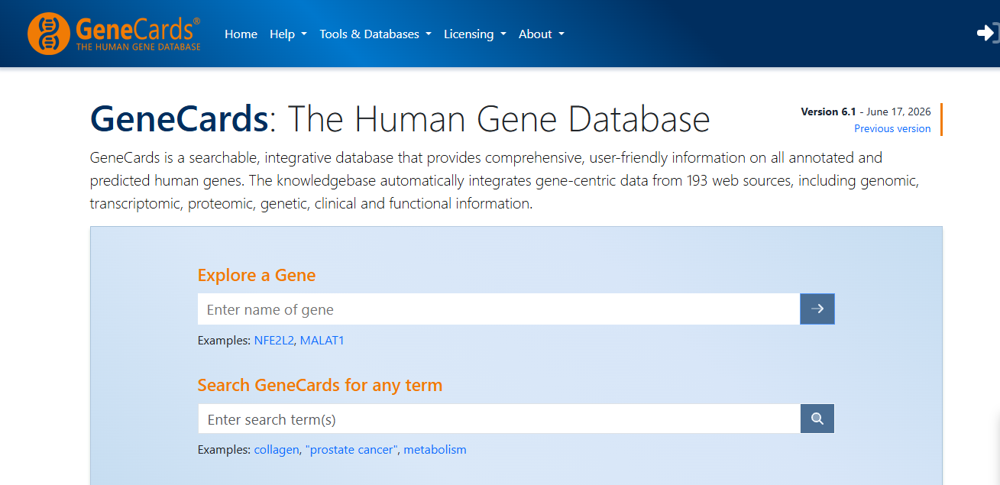
GeneCards
GeneCards: The Human Gene Database es una base de datos integral y autorizada de genes humanos que proporciona información concisa sobre todos los genes humanos anotados y predichos. Integra información de más de 150 fuentes de datos web.
Ver más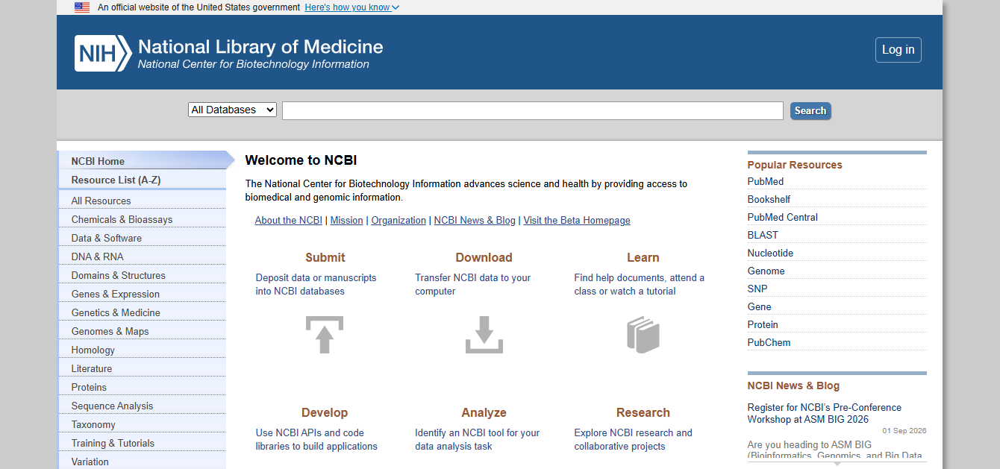
NCBI
El National Center for Biotechnology Information (NCBI) es una base de datos integral que proporciona acceso a información biomédica y genómica. Incluye herramientas para análisis de secuencias, búsqueda de literatura científica y recursos de bioinformática.
Ver más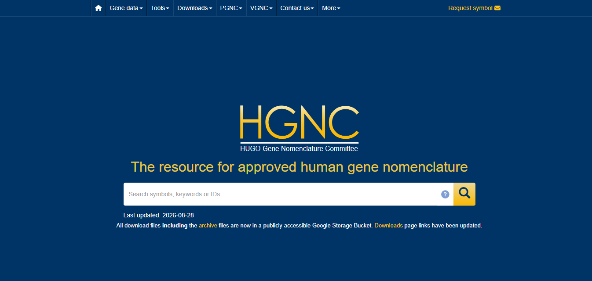
HGNC – HUGO
El HUGO Gene Nomenclature Committee (HGNC) es la autoridad internacional encargada de asignar nombres y símbolos únicos y estandarizados a todos los genes humanos conocidos. Su base de datos es la referencia oficial utilizada por investigadores y bases de datos genómicas de todo el mundo.
Ver más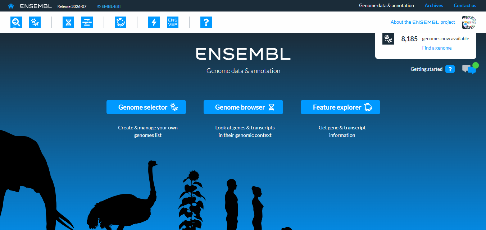
Ensembl
Ensembl es un proyecto de anotación genómica que ofrece genomas de vertebrados y otras especies anotados automáticamente, junto con herramientas de comparación y visualización. Proporciona acceso a datos de genes, transcritos, variantes y elementos reguladores.
Ver más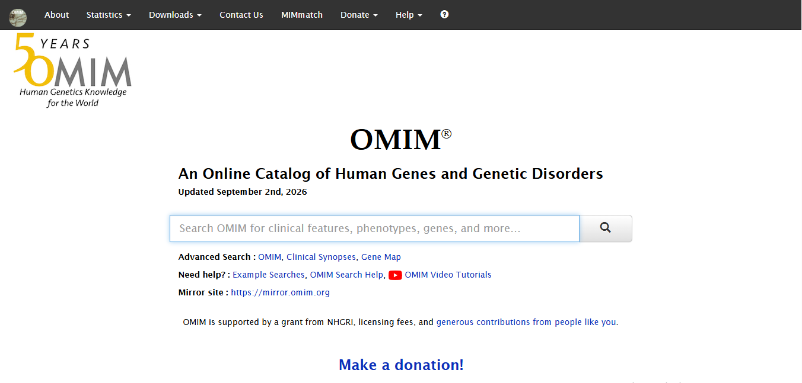
OMIM
Online Mendelian Inheritance in Man (OMIM) es una base de datos completa de genes humanos y trastornos genéticos. Proporciona información detallada sobre la relación entre fenotipos y genotipos en enfermedades hereditarias.
Ver másUniProtKB/Swiss-Prot
UniProtKB/Swiss-Prot es la sección de UniProt curada manualmente que reúne secuencias de proteínas de alta calidad con anotaciones detalladas sobre función, estructura, dominios y modificaciones postraduccionales. Es un recurso esencial para la investigación en proteómica y biología molecular.
Ver más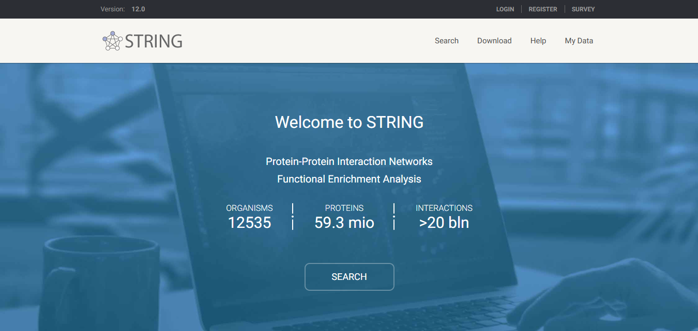
STRING
STRING es una base de datos que recopila interacciones proteína-proteína, tanto físicas como funcionales, conocidas y predichas. Integra evidencia experimental, minería de textos, coexpresión génica y predicciones computacionales para construir redes de interacción.
Ver más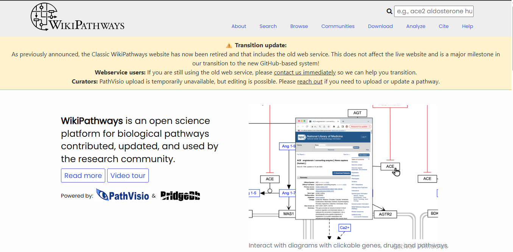
WikiPathways
WikiPathways es una plataforma colaborativa y de acceso abierto para la creación, edición y consulta de vías biológicas. Permite a la comunidad científica contribuir con diagramas curados de rutas metabólicas, de señalización y de regulación génica.
Ver más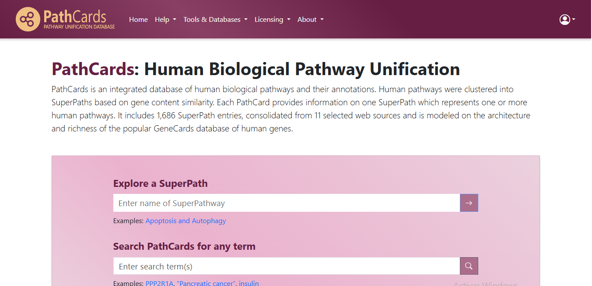
PathCards
PathCards es una base de datos que integra vías biológicas provenientes de múltiples fuentes, agrupándolas en "SuperPaths" que eliminan la redundancia entre rutas superpuestas. Facilita el análisis funcional al conectar genes, vías y enfermedades relacionadas.
Ver más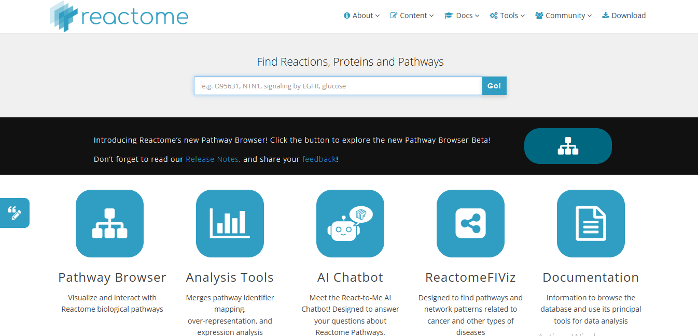
Reactome
Reactome es una base de datos de vías biológicas revisada por expertos y de acceso libre, que describe procesos moleculares en humanos con anotaciones curadas manualmente y revisadas por pares. Permite visualizar rutas de señalización, metabolismo y regulación génica, además de realizar análisis de enriquecimiento de vías.
Ver más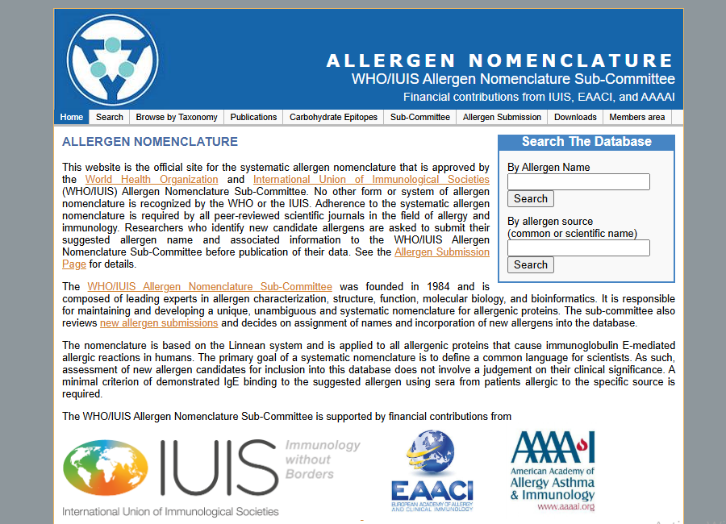
WHO/IUIS Allergen Nomenclature
La base de datos de Nomenclatura de Alérgenos WHO/IUIS es el sitio oficial reconocido por la Organización Mundial de la Salud y la Unión Internacional de Sociedades Inmunológicas para la asignación sistemática de nombres a proteínas alergénicas. Mantiene un listado actualizado y validado de todos los alérgenos reconocidos oficialmente.
Ver más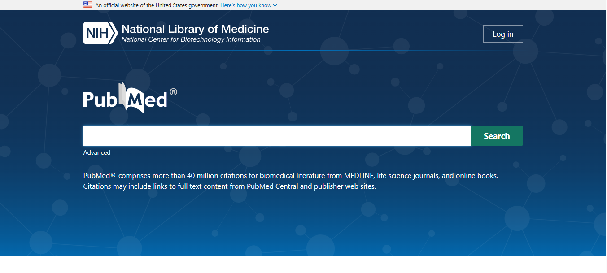
PubMed
PubMed es un motor de búsqueda de literatura biomédica desarrollado por el NCBI que da acceso a millones de citas y resúmenes de artículos científicos en ciencias de la vida y medicina. Es una herramienta fundamental para la investigación bibliográfica y la actualización científica.
Ver más